L'écran de création de compte / connexion (SSO, email, lien magique)
La réponse
Les 4 verdicts d'abord, dans l'ordre de priorité de Charles. Le rythme en tête (la question centrale). Les écrans qui les fondent suivent, lus un par un.
1 · LE RYTHME : l'écran de compte change-t-il vs l'écran d'avant et d'après ?
Solide L'hypothèse de Charles (« ça ne change pas, écran fonctionnel neutre ») est juste sur la composition, à nuancer sur la couleur. Sur les 22 écrans lus, la composition rompt à chaque fois : l'écran d'avant est riche (catalogue, scène immersive, carrousel coloré, quiz illustré), l'écran de compte redescend au formulaire sobre (champs + boutons, beaucoup de vide), l'écran d'après remonte (sélection de langue, paywall, résultats, catalogue). C'est exactement le creux de la courbe de densité posée dans l'audit splash/claim : minimal → pic (claim) → … → compte = retour au neutre. L'écran de compte ne se vend pas, il fait travailler : la composition le dit.
Observé Sur la couleur de fond, deux écoles nettes, selon que l'app est sur fond clair ou sur fond de marque sombre :
- Rupture vers le neutre (fond clair / blanc) : l'app bascule sur un blanc / crème sobre pour le compte. Epic (coral immersif → blanc), Storytel (mur de couvertures sombre → feuille crème claire), Pickatale (carrousel vert menthe → blanc), Readmio (nuit étoilée → carte blanche). C'est l'école la plus fréquente et la plus lisible.
- Continuité de marque (le fond ne change pas) : les apps à thème sombre gardent leur fond et ne rompent que par la composition. Aumio (navy partout), Pocket FM (noir partout), Mangas.io (noir), Skybrary (bleu ciel partout, carte blanche posée dessus), Lili (turquoise). Le compte reste un formulaire sobre dans l'univers de marque.
Estim. Le fil rouge qui ne change jamais, c'est la couleur d'accent du CTA (l'orange Readmio, le coral, le vert, le violet). Conclusion pour Kidsono : la composition doit redescendre au formulaire sobre (c'est universel) ; pour le fond, Kidsono est une app à fond clair (crème), donc la voie naturelle est de garder le crème et de tenir le rythme par la baisse de densité (peu d'éléments, pas de carte exubérante, le jaune réduit au CTA), exactement ce que fait son écran OTP actuel. Pas besoin de virer au blanc : le crème EST déjà le « neutre » de Kidsono.
2 · La STRUCTURE standard d'un écran de compte
Observé Quand le SSO existe, le standard est un écran unique qui réunit tout : les boutons SSO empilés pleine largeur, un séparateur « ou » / « OU » / « or » (présent sur Vooks, Epic, Pocket FM, Pickatale, Lingokids), et un champ email. L'ordre SSO-puis-email domine (Readmio, Vooks, Epic, Storytel, Lingokids), mais l'inverse email-puis-SSO existe (Pickatale : formulaire email/mot de passe en haut, « or », SSO dessous). Le carrefour « déjà un compte ? Se connecter » est un lien discret en haut ou en bas, jamais un écran séparé.
Solide Sur l'authentification email : le mot de passe est dominant (Pickatale, Homer, Lili, Alma, Mangas, Hooked on Phonics, Quelle Histoire, Skybrary). Le lien magique / code OTP est rare : seuls Kidsono et Aumio le font. Le lien magique a un vrai atout (zéro mot de passe à retenir, friction réduite) mais c'est un choix contrarian dans le panel. Quand l'email vaut deux écrans, c'est email → vérification (code OTP ou lien), comme Kidsono et Aumio.
3 · Le SSO Apple + Google : ordre et traitement visuel
Solide Quand Apple ET Google sont présents, Apple est en premier dans la quasi-totalité des cas : Readmio, Vooks, Epic, Storytel, Lingokids, Pickatale. Une seule exception : Pocket FM met Google en premier (sur fond noir). Toujours en boutons pleine largeur empilés verticalement, Apple au-dessus de Google. (Dramabox met Facebook/Google/Apple, Apple en dernier, mais c'est un pattern de croissance appâté au cadeau, pas un modèle à copier.)
Observé Sur le traitement : le « bouton Apple noir plein » des guidelines Apple n'est PAS la norme observée. La majorité harmonise les deux boutons dans un même style (Vooks : deux pilules gris clair ; Epic : deux pilules blanches contour fin ; Storytel : contour sombre ; Pickatale : contour vert de marque), et ne distingue Apple que par sa position en haut et son logo noir. Readmio est le seul à faire un Apple noir plein + Google blanc contour. Les deux marchent.
Solide Absence à noter : le SSO est minoritaire dans le panel enfant. Aucune app française enfant du corpus (Lili, Alma, Quelle Histoire, Whisperies, Gulli) n'offre de SSO, toutes en email/mot de passe. Le SSO est porté par les apps anglo-saxonnes (Epic, Vooks, Readmio, Pickatale, Lingokids) et les plateformes audio (Storytel, Pocket FM). Ajouter Apple + Google met donc Kidsono au-dessus du standard du segment FR enfant, au niveau du top-tier international.
4 · Le PLACEMENT de l'écran de compte dans le flow
- Compte-tôt (gate d'entrée, avant le contenu) : Skybrary, Pocket FM, Readmio, Epic, Lili, Quelle Histoire. L'app force le compte d'emblée. Plus simple à coder, mais plus de friction avant la moindre valeur.
- Compte-différé (après un teaser / au moment d'une action) : Lingokids et Dramabox (feuille modale skippable déclenchée par favoris/abonnement), Kili (gate au moment de s'abonner), Storytel (après l'accroche, avant le paywall), Homer (après le quiz, avant les résultats), Mangas.io (après navigation libre + déclencheur d'essai), Libro.fm (compte optionnel, « explorer » d'abord).
- Solide Le modèle acté Kidsono (compte créé au déblocage de l'écoute gratuite, après le teaser d'1h) est le compte-différé déclenché par un geste, exactement ce que font Lingokids, Dramabox et Kili via une feuille modale qui glisse sur le contenu (c'est déjà la mécanique du gate Kidsono « Connexion requise » / « Oups, tu n'es pas connecté »). On est au standard sur le placement : rien à changer, juste à habiller l'écran.
Les exemples, par écran
D'abord le point de départ Kidsono. Puis les références SSO du standard, avec leur enchaînement pour juger le rythme. Puis les variantes email-seul et les contre-exemples. Chaque écran lu en pleine résolution.
Ce qu'on a aujourd'hui : lien magique + code OTP, sans SSO
Une feuille modale crème qui glisse sur le contenu, déclenchée par un gate (« Connexion requise »). Lien magique email puis code à 6 chiffres. Cartes vert pâle, néo-brutalisme. Pas de SSO. C'est le rythme qu'on cherche à tenir, et la base à enrichir.
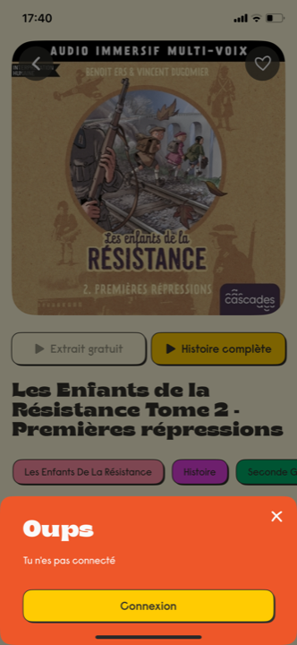
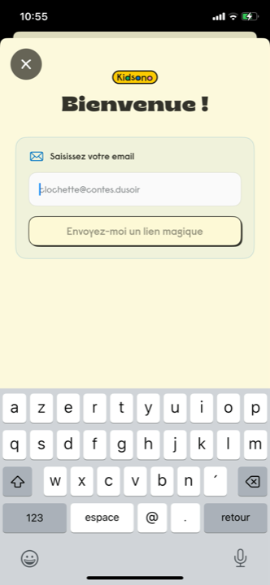
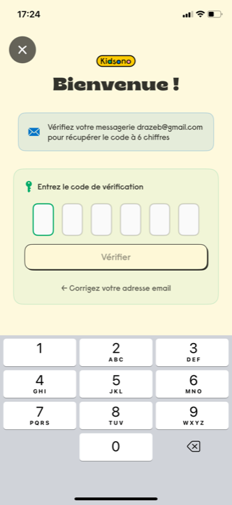
La structure de référence : bloc SSO empilé, séparateur « ou », champ email
L'écran de compte au standard international. Apple au-dessus de Google, boutons pleine largeur, séparateur « ou », email dessous. Fond clair sobre : le compte est le creux de la courbe.
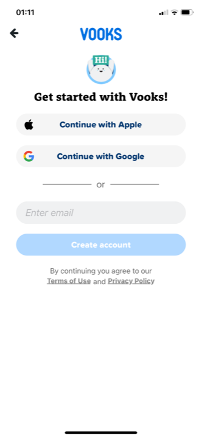
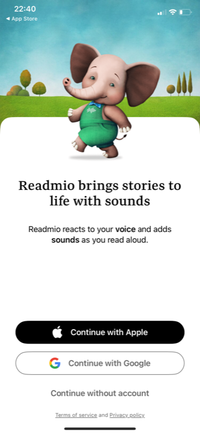
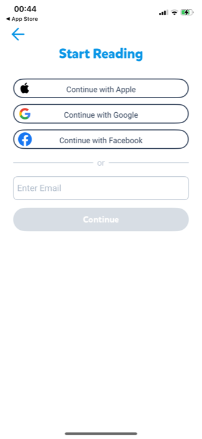
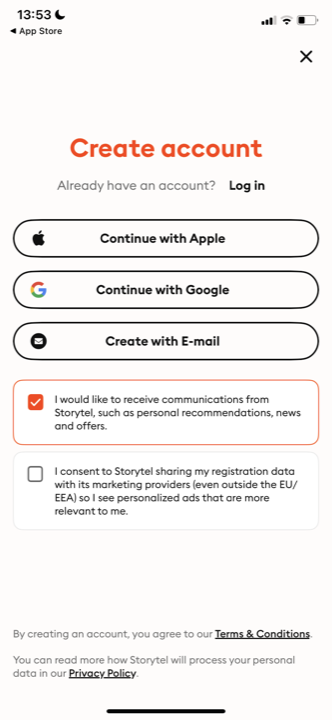
Les variantes valides du même standard
Même ingrédients, agencement différent : email/mot de passe en haut puis SSO dessous (Pickatale), ou compte différé en feuille modale skippable déclenchée par une action (Lingokids).
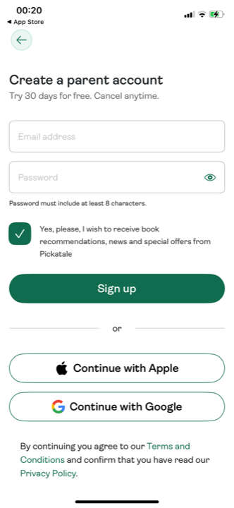
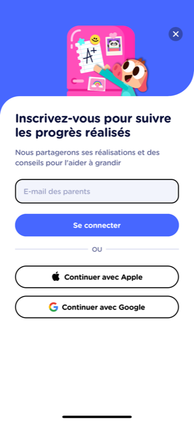
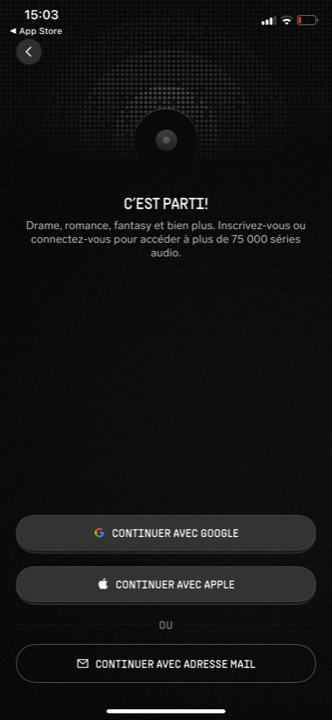
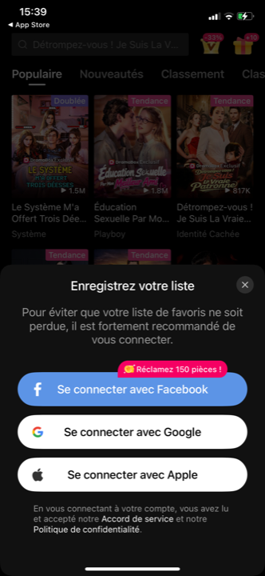
Quand l'app garde son fond et rompt seulement par la composition
Apps à thème sombre ou très brandé : le compte est un formulaire sobre dans l'univers de marque, le fond ne change pas. Et l'auth email-seule (notre cas, façon lien magique), pour comparaison.
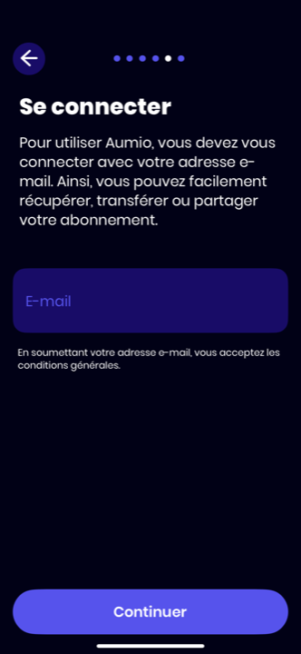

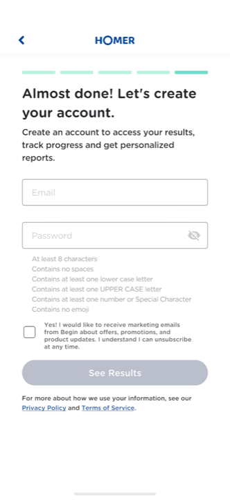
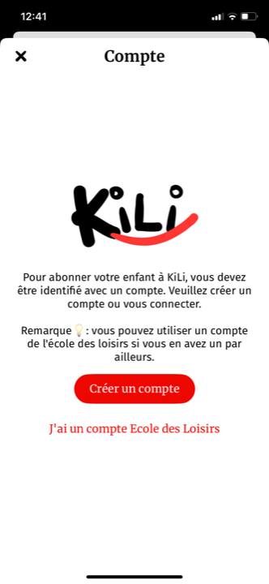
La famille des perdants et les compte-gates datés
Email/mot de passe seul, gate d'entrée frontal, formulaires chargés ou consentements lourds. Aucun SSO. Le retard exact que l'ajout d'Apple/Google permet d'éviter.
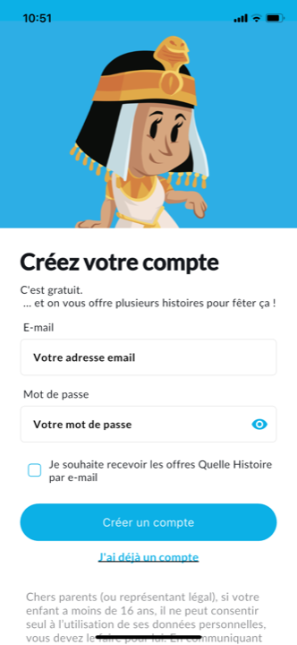
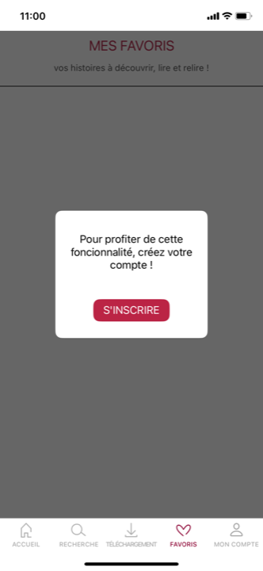
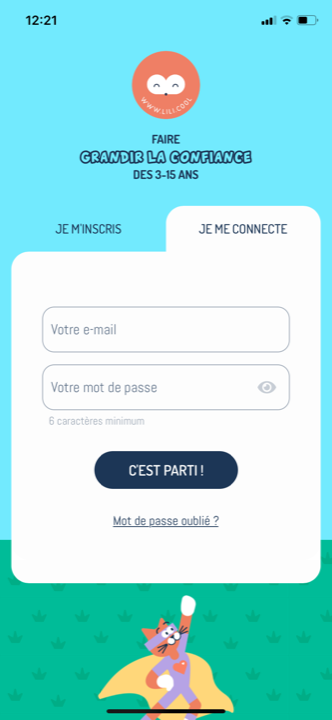
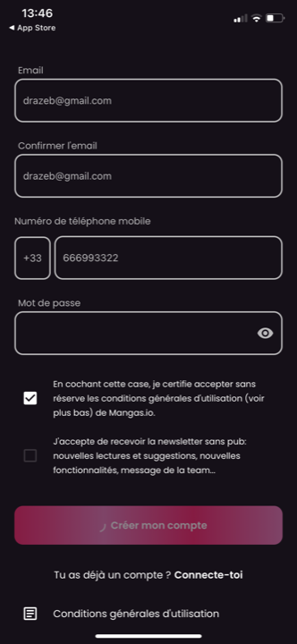
Le rythme : où tombe l'écran de compte dans la courbe
Synthèse de la réponse au cœur de la mission. L'écran de compte est le creux : la composition redescend toujours, le fond reste neutre ou dans la marque, l'accent voyage.
Ce qui CHANGE : la composition (riche → formulaire sobre → riche), et souvent la saturation du fond (école « rupture vers le blanc » : Epic, Storytel, Pickatale, Readmio). Ce qui RESTE : la couleur d'accent du CTA (le fil rouge), et pour les apps à fond de marque, le fond lui-même (école « continuité » : Aumio, Pocket FM, Skybrary, Lili). Estim. Kidsono, app à fond clair, n'a pas besoin de virer au blanc : son crème EST déjà le neutre. Le rythme se tient par la baisse de densité.
Le panel en un tableau
22 écrans de compte lus. SSO, ordre, séparateur, structure, fond, placement. Perdants en bas, en contre-exemple.
| App | Moyens d'auth | SSO | Ordre SSO | « ou » | Écran(s) | Fond au compte | Placement |
|---|---|---|---|---|---|---|---|
| Kidsono (actuel) | Lien magique email + code OTP | Non | · | Non | 2 (email → code) | Crème (continuité) | Différé, déclenché par geste |
| Vooks | Apple, Google, email | Oui | Apple → Google | Oui | 1 | Blanc (rupture) | Après teaser + gate parental |
| Readmio | Apple, Google, sans-compte | Oui | Apple → Google | Non | 1 | Carte blanche (rupture) | Tôt, post-teasers |
| Epic | Apple, Google, Facebook, email | Oui | Apple → Google → FB | Oui | 1 | Blanc (rupture) | Tôt, post-slides |
| Storytel | Apple, Google, email | Oui | Apple → Google | Non (3 égaux) | 1 (modale) | Crème clair (rupture) | Après accroche, avant paywall |
| Pickatale | email/mdp, Apple, Google | Oui | Apple → Google (sous email) | Oui | 1 | Blanc (rupture) | Après carrousel, avant paywall |
| Lingokids | email, Apple, Google | Oui | Apple → Google | Oui (OU) | 1 (modale skip) | Feuille blanche sur bleu | Différé, après paywall |
| Pocket FM | Google, Apple, email | Oui | Google → Apple | Oui | 1 | Noir (continuité) | Tôt, post-splash |
| Dramabox | Facebook, Google, Apple | Oui | FB → Google → Apple | Non | 1 (modale) | Feuille blanche sur catalogue | Différé, déclenché par geste |
| Aumio | Email + mdp temporaire (OTP) | Non | · | Non | 2 (email → OTP) | Navy (continuité) | Fin du quiz, avant paywall |
| Skybrary | Email + mdp | Non | · | Non | Plusieurs | Bleu marque + carte blanche | Tôt (gate d'entrée) |
| Homer | Email + mdp | Non | · | Non | 1 | Blanc (continuité) | Après quiz, avant résultats |
| Kili | email/mdp + compte éditeur EDL | EDL only | · | Non | 2 (choix → form) | Feuille blanche sur catalogue | Au paywall, déclenché par geste |
| Hooked on Phonics | Email + mdp | Non | · | Non | 1 | Blanc + frise animaux | Après carrousel + gate adulte |
| Alma Studio | Email + mdp | Non | · | Non | 1 | Navy sobre (rupture) | Après paywall (différé) |
| Libro.fm | (différé, carte d'entrée) | · | · | · | Carte inline | Blanc + carte colorée | Optionnel, explorer d'abord |
| Quelle Histoire (perdant) | Email + mdp | Non | · | Non | 2 (intro → form) | Bleu + form blanc | Gate d'entrée frontal |
| Whisperies (perdant) | username + email + mdp | Non | · | Non | Éparpillé | Popup blanc / form blanc | Différé, gaté sur actions |
| Lili (perdant) | Email + mdp | Non | · | Non | 1 (onglets) | Turquoise marque | Gate d'entrée frontal |
| Mangas.io | email + tel + mdp | Non | · | Non | 1 | Noir (continuité) | Après navigation, à l'essai |
| Gulli | email/pseudo + mdp (+ invité) | Non | · | Non | 1 | Violet + bloc vert invité | Gate après contrôle parental |
Ce que ça donne pour Kidsono
Réutiliser l'écran lien magique existant, y poser le bloc SSO en haut
- Garder la base actuelle (feuille modale crème « Bienvenue ! ») : c'est déjà le bon placement (compte-différé déclenché par un geste, comme Lingokids / Dramabox / Kili) et déjà le bon rythme (composition sobre, fond crème = neutre de Kidsono). On enrichit, on ne refait pas. Juste retravailler le wording du gate (« Oups, tu n'es pas connecté » → registre parent, vouvoiement, type « Créez votre compte pour continuer l'écoute »).
- Ajouter le bloc SSO EN HAUT, avant l'email : ordre standard du panel (SSO-puis-email domine). De haut en bas : (1) Continuer avec Apple, (2) Continuer avec Google, séparateur « ou », (3) le champ email + « Envoyez-moi un lien magique » existant. Apple toujours au-dessus de Google (quasi-unanime : Vooks, Readmio, Epic, Storytel, Lingokids, Pickatale).
- Traitement néo-brutaliste des boutons SSO : deux boutons pleine largeur empilés, contour noir épais + ombre décalée Kidsono, fond crème ou blanc cassé, logo officiel à gauche (pomme noire / G Google), libellé encre #32322B en Cooper Black ou texte. Harmoniser les deux boutons dans le même style (la majorité du panel le fait : Apple distingué par la position seule, pas par un noir plein). Garder le « lien magique » dans le style carte vert pâle actuel pour la cohérence.
- Le séparateur « ou » : un trait fin de chaque côté du mot « ou » en encre, présent chez Vooks / Epic / Pocket FM / Pickatale / Lingokids. Sépare visuellement le raccourci SSO (1 tap) du chemin email (saisie).
- Tenir le rythme = ne rien sur-décorer : l'écran de compte est le creux de la courbe. On reste en continuité de fond crème (école Aumio/Skybrary, naturelle pour une app à fond clair), composition volontairement sobre : pas de mascotte exubérante, pas d'empilement de cartes néo-brutalistes, le jaune réduit au strict CTA. Le pic émotionnel reste sur le claim, pas ici.
- Carrefour connexion : un lien discret « Déjà un compte ? Se connecter » (pas un second écran). Le SSO gère nativement le cas revenant (Apple/Google reconnaissent le compte) ; pour l'email, le lien magique sert connexion ET inscription indifféremment, un avantage à exploiter (un seul chemin).
- Estim. Piste secondaire à garder en tête : un SSO éditeur (façon Kili « J'ai un compte École des Loisirs ») n'est pertinent que si un éditeur partenaire fournit un identity provider. À écarter au lancement (complexité), mais cohérent avec le positionnement « caution éditeurs » plus tard.
L'avis
Force : la reco capitalise sur l'existant (feuille modale crème + lien magique) sans le casser, et l'aligne sur un standard observé de façon convergente sur 6 apps SSO indépendantes (Apple-first, boutons empilés, « ou », email dessous). Ajouter Apple + Google fait passer Kidsono au-dessus du standard du segment FR enfant (où le SSO est absent : Lili, Quelle Histoire, Whisperies, Gulli, Alma) et au niveau du top-tier international (Epic, Vooks, Storytel). Le gain est concret : 1 tap au lieu d'une saisie email + attente du mail + code, donc moins d'abandon au moment-clé du déblocage gratuit. Solide
Risques : conserver le lien magique sans mot de passe reste contrarian (seuls Kidsono et Aumio le font dans le panel) ; c'est défendable (zéro friction) mais ajoute un aller-retour mail vs le SSO instantané, donc le SSO doit être visuellement le chemin proposé en premier pour absorber l'essentiel du trafic. Le néo-brutalisme sur les boutons SSO doit rester discret (contour + ombre), sinon il rentre en tension avec les logos officiels Apple/Google qui ont leurs propres guidelines visuelles. Observé Le crème offre moins de contraste qu'un blanc franc : vérifier la lisibilité des boutons SSO sur fond crème. Estim.
Position vs standard : au standard sur la structure (bloc SSO + « ou » + email), l'ordre (Apple en premier), le placement (compte-différé déclenché par un geste) et le rythme (compte = creux sobre, fond de marque tenu). Contrarian sur un seul point, l'auth email par lien magique au lieu du mot de passe, choix assumable s'il est secondaire au SSO. Aucun écran du panel ne combine lien magique + SSO côte à côte : Kidsono serait pionnier sur ce mix, sans risque majeur puisque chaque brique est éprouvée séparément.
Audit fondé sur 22 écrans de création de compte / connexion du corpus benchmark (38 apps) + références audiobook/wellness, chaque capture lue une par une en pleine résolution, avec l'écran précédent et suivant pour juger le rythme. Niveaux : Solide vu sur captures · Observé pattern récurrent du panel · Estim. projection directionnelle. Famille des perdants (Quelle Histoire, Whisperies, Lili, et apparentés) citée en contre-exemple uniquement, jamais en référence positive. Mission conseil Kidsono, 2026-06-16.